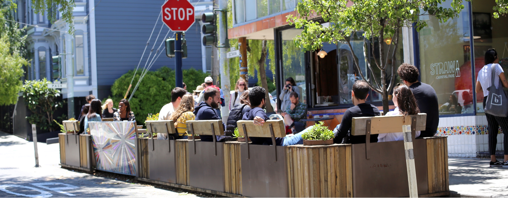

-

Four Barrel Coffee Parklet
-

Mercury Cafe Parklet
-

de-Appropriation Art Wall Parklet
-

Rolling Out Cafe Parklet
-

Museum of Craft & Design Parklet
-

Squat & Gobble Parklet
-

Amandeep Jawa Parklet
-

Haight St. Market Parklet
-

Arizmendi Bakery Parklet
-

Luna Rienne Gallery Parklet
What's a Parklet?
In 2010, tiny 10 x 20 foot green spaces started popping up in San Francisco neighborhoods. These mini-parks, otherwise known as parklets, replace parking spots with a seating area that is open to the public. Every parklet has an original design: some are simple while others are artistic, but all are ADA compliant.
What Makes Them Unique?
Parklets are a unique kind of public space, not only because of their size but also because they are developed by people who come from the community itself. Each parklet is sponsored by a member of the public who funds, designs, builds, and maintains the parklet and works with their neighbors and the City to bring it to life. Adding public open space to any city has measurable positive impacts on residents' quality of life, health, and interconnectedness.
Understanding Their Impact
San Francisco takes an evidence-based approach to understanding the unique benefits that parklets can offer. This includes City databases, publicly available data, Public Life Studies, and accompanying Public Life Data. This website draws data sets together with interviews with parklet users, sponsors, passers-by, businesses on the block, and City staff to look at the human impact of parklets and the people who make them happen.
(Learn about our approach)
What's Next?
Beyond just providing more open public space for San Francisco, the Parklet Program has developed into a global phenomenon inspiring cities around the world to give residents the power to transform underutilized places into open public spaces—a radically bottom-up approach to urban planning and civic engagement. As the concept goes global, City staff is working to ensure people in all neighborhoods across San Francisco have access to the open public space that parklets can provide.
For more information about each parklet, click anywhere on the map.
What's Next?
Beyond just providing more open public space for San Francisco, the Parklet Program has developed into a global phenomenon inspiring cities around the world to give residents the power to transform underutilized places into open public spaces—a radically bottom-up approach to urban planning and civic engagement. As the concept goes global, City staff is working to ensure people in all neighborhoods across San Francisco have access to the open public space that parklets can provide.
For more information about each parklet, click anywhere on the map.
The first program of its kind, the San Francisco Parklet Program has been emulated by 111 cities, in 32 states, and 20 countries.
For more information about each parklet, click anywhere on the map.
The first program of its kind, the San Francisco Parklet Program has been emulated by 111 cities, in 32 states, and 20 countries.
For more information about each parklet, click anywhere on the map.
In San Francisco alone there are 59 active parklets in 19 different neighborhoods*
*as of August 2019
For more information about each parklet, click anywhere on the map.
In San Francisco alone there are 59 active parklets in 19 different neighborhoods*
*as of August 2019
For more information about each parklet, click anywhere on the map.
“Success for me is being able to expand the program to areas of need where there's either not great access to open space or the public realm doesn't have a lot of investment in it.”
Maria, SF Parklet Program
“Success for me is being able to expand the program to areas of need where there's either not great access to open space or the public realm doesn't have a lot of investment in it.”
Maria, SF Parklet Program
There are still 22 neighborhoods in San Francisco that don't currently have a parklet
For more information about each parklet, click anywhere on the map.